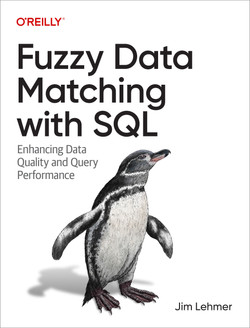

Jim Lehmer, the man behind the curtain of Dullroar Enterprises, is also a published O'Reilly author.
Fuzzy Data Matching with SQL
If you were handed two different but related sets of data, what tools would you use to find the matches? What if all you had was SQL SELECT access to a database? In this practical book, author Jim Lehmer provides best practices, techniques, and tricks to help you import, clean, match, score, and think about heterogeneous data using SQL.
DBAs, programmers, business analysts, and data scientists will learn how to identify and remove duplicates, parse strings, extract data from XML and JSON, generate SQL using SQL, regularize data and prepare datasets, and apply data quality and ETL approaches for finding the similarities and differences between various expressions of the same data.
Full of real-world techniques, the examples in the book contain working code. You'll learn how to:
- Identity and remove duplicates in two different datasets using SQL
- Regularize data and achieve data quality using SQL
- Extract data from XML and JSON
- Generate SQL using SQL to increase your productivity
- Prepare datasets for import, merging, and better analysis using SQL
- Report results using SQL
- Apply data quality and ETL approaches to finding similarities and differences between various expressions of the same data
Description from O'Reilly website
Ten Steps to Linux Survival
Linux systems are everywhere today, even in companies once considered "pure Windows." If you’re a sysadmin, network administrator, or developer in a small Windows shop, you may have to jump in and fix a system problem when your site goes down. What if you have no Linux knowledge? This short guide provides tips to help you survive.
Linux systems may appear in your shop as virtual machines or in the cloud, including web servers, databases, mobile device managers, version control, and monitoring systems. When one of them falters, this primer leads you through some diagnostic and recovery tasks so you can quickly get your site back up.
- Connect to a Linux system with OpenSSH and PuTTY secure shells
- List files and directories, and move around within the file system
- Safely inspect the file contents without changing them
- Narrow your search by using commands to locate specific files
- Use the grep command to search for error messages inside a file
- Determine real-time system state to find underlying problems
- Examine disk utilization and zero in on space-hogging files
- Transfer suspect files from Linux to Windows for later analysis
- Use commands to start, stop, restart, or even kill unresponsive services
- Know where to find help when troubleshooting isn’t enough
Description from O'Reilly website